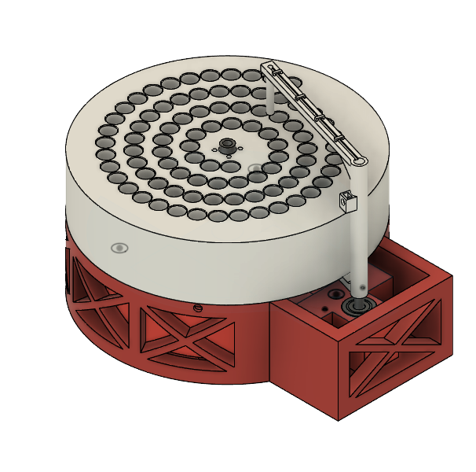

Colosseum: open source automated fraction collector

In a follow-up to my all time favorite post, Protein Purification on a Budget: Technical Tuesday, today we are covering a design for a fraction collector for <$100. In their recent preprint, Low-cost, scalable, and automated fluid sampling for fluidics applications , A. S. Boosehaghi, Y.A. Kil, K. H. Min, J. Gehring and L. Pachter from Caltech present a how-to on building your own automated collector with 3D printed parts and off-the shelf components. As cited in the paper, the commercial version can run $1000-$10,000!
The paper includes youtube instructions for building and a GUI on github to run different programs through an Arduino. They also provide data on their flow-rate error and control over fraction size (Fig. 2 in the paper). Seems pretty handy for scaling up a cheap purification set up.